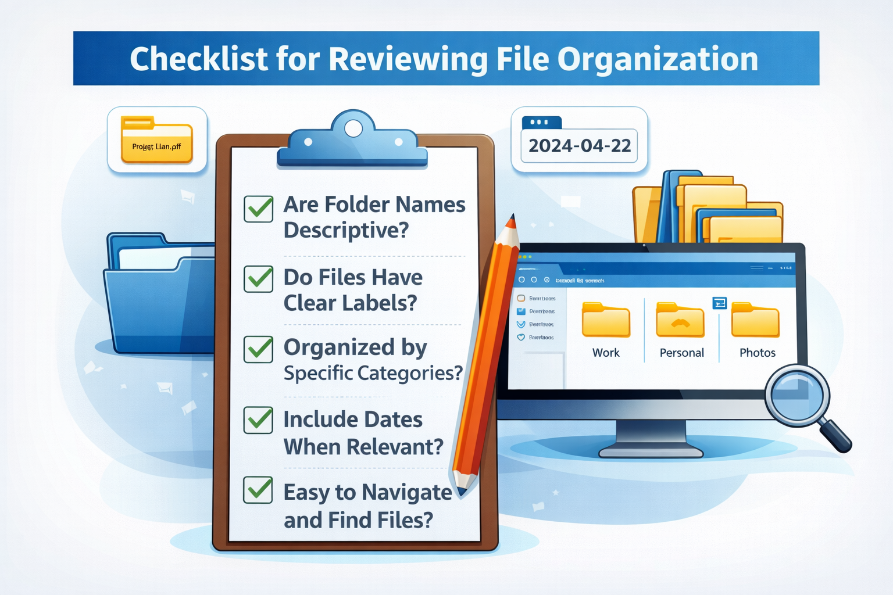
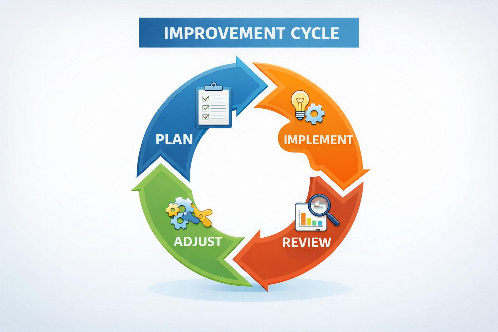

Periodic audits identify inefficiencies, duplicates, and outdated files. Reviewing folder structures ensures alignment with current needs.
Questions to consider include:
Are files easy to locate?
Are names consistent?
Are backups up to date?
Auditing prevents gradual decline into disorder.

Improving Over Time
Effective systems evolve. As responsibilities increase, organisation must adapt. Small incremental improvements are more sustainable than total redesigns.
Independence in digital management reflects maturity. The ultimate objective is not perfection, but control and clarity.

Module Assessment
Question 1
What is the goal of file management?
Question 2
What does auditing a file system mean?
Question 3
Why should file systems be reviewed periodically?
Question 4
You notice duplicate files across several folders. What should you do?
Question 5
Which question helps evaluate your organisation?
Question 6
Why is self-evaluation important?
Question 7
A student cannot find files quickly in their system. What should they do?
Question 8
What is the goal of improving file systems?
Question 9
How often should systems ideally be reviewed?
Question 10
What skill does independent file management develop?